전기기사 (2010-03-07 기출문제)
1과목: 전기자기학
1. 영구자석에 관한 설명으로 옳지 않은 것은?
- 한번 자화된 다음에는 자기를 영구적으로 보존하는 자석이 된다.
- 보자력이 클수록 자계가 강한 영구자석이 된다.
- 잔류 자속밀도가 클수록 자계가 강한 영구자석이 된다.
- 자석 재료로 폐회로를 만들면 강한 영구자석이 된다.
(정답률: 76%)

2. 대지의 고유저항이 ρ[Ω·m]일 때 반지름 a[m]인 그림과 같은 반구 접지극의 접지저항[Ω]은?
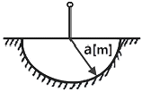
- ρ/(4πa)
- ρ/(2πa)
- (2πρ)/a
- 2πρa
(정답률: 77%)
3. 렌쯔의 법칙을 올바르게 설명한 것은?
- 전자유도에 의하여 생기는 전류의 방향은 항상 일정하다.
- 전자유도에 의하여 생기는 전류의 방향은 자속 변화를 방해하는 방향이다.
- 전자유도에 의하여 생기는 전류의 방향은 자속변화를 도와주는 방향이다.
- 전자유도에 의하여 생기는 전류의 방향은 자속변화와는 관계가 없다.
(정답률: 74%)
4. 앙페르의 주회적분 법칙을 설명한 것으로 올바른 것은?
- 폐회로 주위를 따라 전계를 선적분한 값은 폐회로내의 총저항과 같다.
- 폐회로 주위를 따라 전계를 선적분한 값은 폐회로내의 총전압과 같다.
- 폐회로 주위를 따라 자계를 선적분한 값은 폐회로 내의 총전류와 같다.
- 폐회로 주위를 따라 전계와 자계를 선적분한 값은 폐회로 내의 총 저항, 총 전압, 총 전류의 합과 같다.
(정답률: 72%)
5. 자유공간에서 전파 E(z,t)=103sin(ωt-βz)ay[V/m]일 때 자파 H(z,t)[A/m]는?
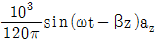
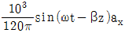
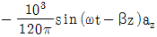
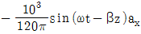
(정답률: 39%)
6. 평행판 콘덴서에 어떤 유전체를 넣었을 때, 전속밀도가 4.8×10-7[C/m2]이고, 단위 체적당 에너지가 5.3×10-3[J/m3]이었다. 이 유전체의 유전율은 몇 [F/m]인가?(오류 신고가 접수된 문제입니다. 반드시 정답과 해설을 확인하시기 바랍니다.)
- 1.15×10-11[F/m]
- 2.17×10-11[F/m]
- 3.19×10-11[F/m]
- 4.21×10-11[F/m]
(정답률: 70%)
7. 무손실 전송 회로의 특성 임피던스[Ω]는?
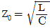
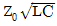
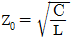
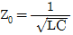
(정답률: 79%)
8. 유전율이 10인 유전체를 5[V/m]인 전계 내에 놓으면 유전체의 표면전하밀도는 몇 [C/m2]인가? (단, 유전체의 표면과 전계는 직각이다.)
- 0.5[C/m2]
- 1.0[C/m2]
- 50[C/m2]
- 250[C/m2]
(정답률: 72%)
9. 자유공간 중에서 점 P(2, -4, 5)가 도체면상에 있으며, 이 점에서 전계 E=3ax-6ay＋2az[V/m]이다. 도체면에 법선성분 En및 접선성분 Et의 크기는 몇 [V/m]인가?
- En=3, Et=-6
- En=7, Et=0
- En=2, Et=3
- En=-6, Et=0
(정답률: 61%)
10. 도전도 k=6×1017[℧/m], 투자율 μ=(6/π)×10-7인 평면도체 표면에 10[KHz]의 전류가 흐를 때, 침투되는 깊이 δ[m]는?
- (1/6)×10-7
- (1/8.5)×10-7
- (36/π)×10-10
- (36/π)×10-7
(정답률: 62%)
11. V=x2[V]로 주어지는 전위 분포일 때 x=20[㎝]인 점의 전계는?
- ＋x 방향으로 40[V/m]
- -x 방향으로 40[V/m]
- ＋x 방향으로 0.4[V/m]
- -x 방향으로 0.4[V/m]
(정답률: 69%)
12. 길이가 100[㎝]인 자기 회로를 구성할 때 비투자율이 50인 철심을 이용한다면, 자기 저항을 2.5×107[AT/ωb] 이하로 하기 위해서는 단면적을 약 몇 [m2] 이상으로 하여야 하는가?
- 3.6×10-4[m2]
- 6.4×10-4[m2]
- 7.9×10-4[m2]
- 9.2×10-4[m2]
(정답률: 65%)
13. 자기 인덕턴스의 성질을 옳게 표현한 것은?
- 항상 정(正)이다.
- 항상 부(負)이다.
- 항상 0이다.
- 유도되는 기전력에 따라 정(正)도 되고 부(負)도 된다.
(정답률: 75%)
14. 자기 인덕턴스 0.⑤[H]의 회로에 흐르는 전류가 매초 530[A]의 비율로 증가할 때 자기 유도 기전력[V]은?
- -13.3
- -26.5
- -39.8
- -53
(정답률: 75%)
15. 내부장치 또는 공간을 물질로 포위시켜 외부 자계의 영향을 차폐시키는 방식을 자기차폐라 한다. 다음 중 자기차폐에 가장 좋은 것은?
- 강자성체 중에서 비투자율이 큰 물질
- 강자성체 중에서 비투자율이 작은 물질
- 비투자율이 1보다 작은 역자성체
- 비투자율에 관계없이 물질의 두께에만 관계되므로 되도록이면 두꺼운 물질
(정답률: 80%)
16. 비유전율이 ℇr인 유전체 표면에서 d1만큼 떨어져 있는 점전하 Q에 작용하는 힘의 크기와 유전체 표면에서 d2만큼 떨어져 있는 점전하 2Q에 작용하는 힘의 크기가 같을 때 d2는?
- d2=0.5d1
- d2=d1
- d2=1.5d1
- d2=2d1
(정답률: 66%)
17. 어떤 자기회로에 3000[AT]의 기자력을 줄 때, 2×10-3[Wb]의 자속이 통하였다. 이 자기회로의 자화에 필요한 에너지는 몇 [J]인가?
- 3×10-3[J]
- 3.0[J]
- 1.5×10-3[J]
- 1.5[J]
(정답률: 51%)
18. 진공 중에 놓인 Q[C]의 전하에서 발산되는 전기력선의 수는?
- Q
- ℇ0
- Q/ℇ0
- ℇ0/Q
(정답률: 74%)
19. 유전율이 각각 다른 두 유전체가 서로 경계를 이루며 접해 있다. 다음 중 옳지 않은 것은? (단, 이 경계면에는 진전하분포가 없다고 한다.)
- 경계면에서 전계의 접선성분은 연속이다.
- 경계면에서 전속밀도의 법선성분은 연속이다.
- 경계면에서 전계와 전속밀도는 굴절한다.
- 경계면에서 전계와 전속밀도는 불변이다.
(정답률: 58%)
20. 수직편파는?
- 대지에 대해서 전계가 수직면에 있는 전자파
- 대지에 대해서 전계가 수평면에 있는 전자파
- 대지에 대해서 자계가 수직면에 있는 전자파
- 대지에 대해서 자계가 수평면에 있는 전자파
(정답률: 72%)
2과목: 전력공학
21. 송전 전력, 송전거리, 전선의 비중 및 전력 손실률이 일정하다고 할 때, 전선의 단면적 A[mm2]은? (단, V는 송전 전압이다.)
- V에 반비례
- √V에 비례
- V2에 반비례
- V2에 비례
(정답률: 73%)
22. 과전류 계전기는 그 용도에 따라 적절한 동작 시한(time limit)이 있는 것을 선정하여야 하는바 그림에서 반한시형으로 가장 알맞은 것은?
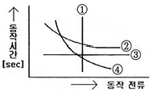
- ①
- ②
- ③
- ④
(정답률: 69%)
23. 코로나 방지에 가장 효과적인 방법은?
- 선로의 절연을 강화한다.
- 선간거리를 증가시킨다.
- 복도체를 사용한다.
- 선로의 높이를 가급적 낮춘다.
(정답률: 79%)
24. 정격전압 7.2[kV], 차단 용량 100[MVA]인 3상 차단기의 정격 차단 전류는 약 몇 [kA]인가?
- 4
- 6
- 7
- 8
(정답률: 66%)
25. 한 상의 대지 정전용량 0.4[μF], 주파수 60[Hz]인 3상 송전선이 있다. 이 선로에 소호 리액터를 설치하려 한다. 소호리액터의 공진 리액턴스는 약 몇 [Ω]인가?
- 565
- 1370
- 1770
- 2217
(정답률: 51%)
26. 수력 발전소의 댐을 설계하거나 저수지의 용량 등을 결정하는데 가장 적당한 것은?
- 유량도
- 적산 유량 곡선
- 유황 곡선
- 수위 유량 곡선
(정답률: 60%)
27. 변전소에서 접지보호용으로 사용되는 계전기에 영상 전류를 공급하기 위하여 설치하는 것은?
- PT
- ZCT
- GPT
- CT
(정답률: 77%)
28. 단로기에 대한 설명으로 옳지 않은 것은?
- 소호장치가 있어서 아크를 소멸 시킨다.
- 회로를 분리하거나, 계통의 접속을 바꿀 때 사용한다.
- 고장 전류는 물론 부하전류의 개폐에도 사용할 수 없다.
- 배전용의 단로기는 보통 디스커넥팅바로 개폐한다.
(정답률: 73%)
29. 부하에 따라 전압 변동이 심한 급전선을 가진 배전 변전소에서 가장 많이 사용되는 전압조정 장치는?
- 유도 전압 조정기
- 직렬 리액터
- 계기용 변압기
- 전력용 콘덴서
(정답률: 66%)
30. 6.6[kV] 3상 3선식 배전선로에서 완전 1선 지락 고장이 발생 하였을 때 GPT 2차에 나타나는 전압 [V]은? (단, GPT는 변압기 3대로 구성되어 있으며, 변압기의 변압비는 (6600/√3)/(110/√3)V이다.)
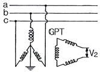
- 110/√3[V]
- 110[V]
- 110√3[V]
- 330[V]
(정답률: 43%)
31. 종축에 절대온도 T, 횡축에 엔트로피 S를 취할 때 T-S선도에 있어서 단열변화를 타나내는 것은?
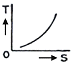
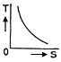
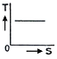
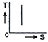
(정답률: 51%)
32. 피뢰기가 구비하여야 할 조건으로 거리가 먼 것은?
- 시간지연이 적을 것
- 충격 방전 개시 전압이 낮을 것
- 방전 내량이 크면서 제한 전압이 높을 것
- 속류 차단 능력이 클 것
(정답률: 58%)
33. 가공 전선로에 사용하는 전선의 구비조건으로 바람직하지 않은 것은?
- 비중(밀도)이 클 것
- 도전율이 높을 것
- 신장률이 클 것
- 기계적인 강도가 클 것
(정답률: 66%)
34. 송전 선로의 중성점을 접지하는 목적과 거리가 먼 것은?
- 이상 전압 발생의 억제
- 과도 안정도의 증진
- 송전 용량의 증가
- 보호 계전기의 신속, 정확한 동작
(정답률: 69%)
35. 소호 원리에 따른 차단기의 종류와 그 특성의 연결이 바르지 못한 것은?
- 가스 차단기 - 고성능 절연 특성을 가진 SF6 가스를 소호매질로 이용하는 차단기로 소호 능력이 공기의 100배 이상이며, 차단 시 소음은 문제가 되지 않는다.
- 공기 차단기 - 압축된 공기를 아크에 불어 넣어서 소호 하는 차단기로 압력이 높아짐에 따라 절연 내력이 증가하며, 차단 시 소음이 작다.
- 유입 차단기 - 절연 내력이 높은 절연유를 이용하여 차단 시에 발생하는 아크를 소호시키는 방식으로 탱크형과 애자형이 있다.
- 진공 차단기 - 진공 중에 차단동작을 하는 개폐기로 절연내력이 높고 화재 위험이 없으며, 소형 경량이다.
(정답률: 66%)
36. 전력용 콘덴서를 변전소에 설치할 때 직렬 리액터를 설치하고자 한다. 직렬 리액터의 용량을 결정하는 계산식은? (단, f0는 전원의 기본 주파수, C는 역률 개선용 콘덴서의 용량, L은 직렬 리액터의 용량이다.)
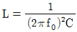
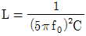
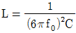
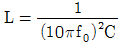
(정답률: 55%)
37. 전선에 교류가 흐를 때의 표피 효과에 관한 설명으로 옳은 것은?
- 전선은 굵을수록, 도전율 및 투자율은 작을수록, 주파수는 높을수록 커진다.
- 전선은 굵을수록, 도전율 및 투자율은 클수록, 주파수는 높을수록 커진다.
- 전선은 가늘수록, 도전율 및 투자율은 작을수록, 주파수는 높을수록 커진다.
- 전선은 가늘수록, 도전율 및 투자율은 클수록, 주파수는 높을수록 커진다.
(정답률: 70%)
38. 동기 조상기와 전력용 콘덴서를 비교할 때 전력용 콘덴서의 이점으로 알맞은 것은?
- 진상 전류 및 지상전류 양용이다.
- 단락 고장이 생겼을 때, 고장 전류가 흐르지 않는다.
- 송전선로의 무부하 충전 시 송전에 이용 가능하다.
- 전압 조정이 연속적이다.
(정답률: 59%)
39. 직접 접지방식이 초고압 송전선로에 채용되는 이유로 가장 타탕한 것은?
- 계통의 절연 레벨을 저감하게 할 수 있으므로
- 지락시의 지락전류가 적으므로
- 지락 고장 시 병행 통신선에 유기되는 유도전압이 작기 때문에
- 송전선의 안정도가 높으므로
(정답률: 59%)
40. “송전선로의 전압을 2배로 승압할 경우 동일 조건에서 공급전력을 동일하게 취하면 선로 손실은 승압 전의 ( ㉮ )로 되고, 선로손실률을 동일하게 취급하면 공급 전력은 승압전의 ( ㉯ )로 된다.” ( ㉮ ), ( ㉯ )에 들어갈 내용으로 알맞은 것은?
- ㉮ 1/4, ㉯ 4배
- ㉮ 1/2, ㉯ 4배
- ㉮ 1/4, ㉯ 2배
- ㉮ 1/2, ㉯ 2배
(정답률: 58%)
3과목: 전기기기
41. 4극 60[hz]의 유도 전동기가 슬립 5[%]로 전부하 운전하고 있을 때 2차 권선의 손실이 94.25[W]라고 하면 토크는 약 몇 [N·m]인가?
- 1.02
- 2.04
- 10.0
- 20.0
(정답률: 55%)
42. 정격 5[kW], 100[V]의 타여자 직류 전동기가 어떤 부하를 가지고 회전하고 있다. 전기자 전류 20[A], 회전수 1500[rpm], 전기자 저항이 0.2[Ω]이다. 발생 토크는 약 몇 [kg·m]인가?
- 1.00
- 1.15
- 1.25
- 1.35
(정답률: 50%)
43. 3상 6극 슬롯수 54의 동기 발전기가 있다 어떤 전기자코일의 두변이 제 1슬롯과 제 8슬롯에 들어 있다면 단절권 계수는 약 얼마인가?
- 0.9397
- 0.8367
- 0.7306
- 0.6451
(정답률: 47%)
44. 유도 전동기의 슬립(slip) S의 범위는?
- 1＞S＞0
- 0＞S＞-1
- 2＞S＞1
- -1＜S＜1
(정답률: 70%)
45. 동기 발전기의 전기자 권선법 중 분포권의 특징이 아닌 것은?
- 슬롯 간격은 상수에 반비례한다.
- 집중권에 비해 합성유기 기전력이 크다.
- 집중권에 비해 기전력의 고조파가 감소한다.
- 집중권에 비해 권선의 리액턴스가 감소한다.
(정답률: 56%)
46. 정류자형 주파수 변환기를 동일한 전원에 연결된 유도전동기의 축과 직결해서 사용하고 있다. 다음 설명 중 옳지 않은 것은?
- 농형 유도전동기의 2차 여자를 할 수 있다.
- 권선형 유도전동기의 속도제어 및 역률 개선을 할 수 있다.
- 유도 전동기의 속도 제어 범위가 동기속도 상하 10~15% 정도이다.
- 유도 전동기가 동기속도 이하에서는 2차 전력이 변압기를 통해 전원으로 반환된다.
(정답률: 46%)
47. 정격 전압이 6000[V], 정격 출력 12000[kVA], 매상의 동기 임피던스가 3[Ω]인 3상 동기 발전기의 단락비는?
- 1.0
- 1.2
- 1.3
- 1.5
(정답률: 49%)
48. 병렬 운전 중의 A, B 두 동기 발전기에서 A 발전기의 여자를 B 발전기 보다 강하게 하면 A발전기는?
- 90도 진상 전류가 흐른다.
- 90도 지상 전류가 흐른다.
- 동기화 전류가 흐른다.
- 부하 전류가 증가한다.
(정답률: 53%)
49. 변압기의 전압 변동률에 대한 설명 중 잘못된 것은?
- 일반적으로 부하 변동에 대하여 2차 단자 전압의 변동이 작을수록 좋다.
- 전부하시와 무부하시의 2차 단자 전압이 서로 다른 정도를 표시하는 것이다.
- 전압 변동률은 전등의 광도, 수명, 전동기의 출력 등에 영향을 미친다.
- 인가전압이 일정한 상태에서 무부하 2차 단자 전압에 반비례한다.
(정답률: 58%)
50. 직류 전동기의 속도 제어법에서 정출력 제어에 속하는 것은?
- 계자 제어법
- 전기자 저항 제어법
- 전압 제어법
- 워드 레오나드 제어법
(정답률: 57%)
51. 주파수가 정격보다 3[%] 상승하고 동시에 전압이 정격보다 3[%] 저하한 전원에서 운전되는 변압기가 있다. 철손이 fBm2 (f : 주파수, Bm : 자속밀도 최대치)에 비례 한다면 이 변압기 철손은 정격 상태에 비해 어떻게 달라지는가?
- 약 3.1[%] 증가
- 약 3.1[%] 감소
- 약 8.7[%] 증가
- 약 8.7[%] 감소
(정답률: 45%)
52. 직류기의 전기자 반작용의 영향이 아닌 것은?
- 전기적 중성축이 이동한다.
- 주자속이 감소한다.
- 정류자편 사이의 전압이 불균일하게 된다.
- 자기여자 현상이 생기며 국부적으로 전압이 낮아진다.
(정답률: 56%)
53. 농형 유도전동기의 기동방법으로 옳지 않은 것은?
- Y-Δ 기동
- 2차 저항에 의한 기동
- 전전압 기동
- 리액터 기동
(정답률: 69%)
54. 정격 출력이 7.5[kW]의 3상 유도 전동기가 전부하 운전에서 2차 저항손이 300[W]이다. 슬립은 약 몇 [%]인가?
- 3.85
- 4.61
- 7.51
- 9.42
(정답률: 58%)
55. 3상 직권 정류자 전동기의 특성으로 옳지 않은 것은?
- 직권 특성의 변속도 전동기이다.
- 토크는 거의 전류의 제곱에 비례하고 기동 토크가 크다.
- 역률은 동기속도 이상에서 저하되며 80%정도이다.
- 효율은 고속에서는 거의 일정하며 동기속도 근처에서 가장 좋다.
(정답률: 53%)
56. 어떤 단상 변압기의 2차 무부하 전압이 240[V]이고, 정격 부하시의 2차 단자 전압이 230[V]이다. 전압 변동률은 약 몇 [%]인가?
- 4.35
- 5.15
- 6.65
- 7.35
(정답률: 66%)
57. 3상 권선형 유도 전동기의 전부하 슬립이 4[%], 2차 1상의 저항이 0.3[Ω]이다. 이 유도 전동기의 기동 토크를 전부하 토크와 같도록 하기 위해 외부에서 2차에 삽입해야 할 저항의 크기 [Ω]는?
- 2.8
- 3.5
- 4.8
- 7.2
(정답률: 53%)
58. 반도체 소자 중 3단자 사이리스터가 아닌 것은?
- SCS
- SCR
- GTO
- TRIAC
(정답률: 67%)
59. 단상 변압기의 임피던스 와트를 구하기 위하여 어느 시험이 필요한가?
- 무부하 시험
- 단락 시험
- 유도 시험
- 반환부하 시험
(정답률: 55%)
60. 서보 전동기로 사용되는 전동기와 제어 방식의 종류가 아닌 것은?
- 직류기의 전압 제어
- 릴럭턴스기의 전압 제어
- 유도기의 전압 제어
- 동기 기기의 주파수 제어
(정답률: 50%)
4과목: 회로이론 및 제어공학
61. 다음 중 f(t)=e-at의 Z 변환은?
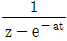
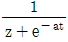
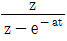
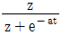
(정답률: 64%)
62. 상태 방정식
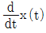
= Ax(t)+bu(t) 에서 A =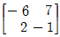
이라면 A의 고유값은?- 1, -8
- 1, -5
- 2, -8
- 2, -5
(정답률: 57%)
63. 다음 중 어떤 계통의 파라미터가 변할 때 생기는 특성 방정식의 근의 움직임으로 시스템의 안정도를 판별하는 방법은?
- 보드 선도법
- 나이퀴스트 판별법
- 근 궤적법
- 루스-후르비쯔 판별법
(정답률: 62%)
64. 그림과 같은 벡터 궤적을 갖는 계의 주파수 전달 함수는?
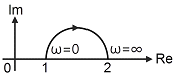
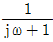
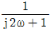
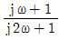
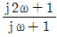
(정답률: 58%)
65. 그림과 같은 블록선도로 표시되는 계는 무슨 형인가?
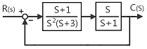
- 0형
- 1형
- 2형
- 3형
(정답률: 50%)
66. 특성 S3＋2S2＋2S＋40=0방정식이 인 경우, 양의 실수부를 갖는 근은 몇 개인가?
- ０
- １
- ２
- ３
(정답률: 67%)
67. 다음 중 G(s)H(s) =
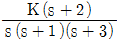
일 때 근궤적의 수는?- ０
- １
- ２
- ３
(정답률: 67%)
68. 그림과 같은 신호흐름 선도에서 전달함수 C(s)/R(s)는?
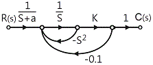
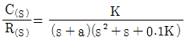
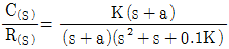
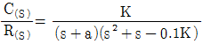
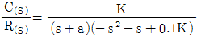
(정답률: 53%)
69. 다음의 논리회로를 간단히 하면?
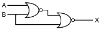
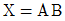
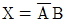
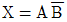
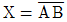
(정답률: 62%)
70. G(jω)=K/(jω(jω＋1))의 나이퀴스트 선도를 도시한 것은? (단, K＞0이다.)
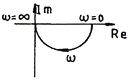
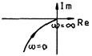
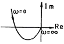
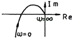
(정답률: 64%)
71. R=100[Ω], L=1[H]의 직렬회로에 직류전압 E=100[V]를 가했을 때, t=0.01[s] 후의 전류 it[A]는 약 얼마인가?
- 0.362[A]
- 0.632[A]
- 3.62[A]
- 6.32[A]
(정답률: 60%)
72. 내부 임피던스가 0.3＋j2[Ω]인 발전기에 임피던스가 1.7＋j3[Ω]인 선로를 연결하여 전력을 공급한다. 부하 임피던스가 몇 [Ω]일 때 최대 전력이 전달되겠는가?
- 2[Ω]
- √29[Ω]
- 2-j5[Ω]
- 2＋j5[Ω]
(정답률: 62%)
73. 다음과 같이 1개의 콘덴서와 2개의 코일이 직렬로 접속된 회로에 300[hz]의 주파수가 공진한다고 한다. C=30[μF], L1=L2=4[mH]이면 상호인덕턴스 M 값은 약 몇 [mH]인가? (단, 코일은 동일 축 상에 같은 방향으로 감겨져 있다.)
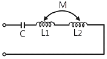
- 2.8[mH]
- 1.4[mH]
- 0.7[mH]
- 0.4[mH]
(정답률: 36%)
74. 피상 전력이 22[kVA]인 부하의 역률이 0.8 이라면 무효전력[Var]은?
- 18600[Var]
- 16600[Var]
- 15200[Var]
- 13200[Var]
(정답률: 63%)
75. 정격 전압에서 1[kW]의 전력을 소비하는 저항에 정격의 80[%]의 전압을 가할 때의 전력은?
- 320[W]
- 540[W]
- 640[W]
- 860[W]
(정답률: 68%)
76. eJWt의 라플라스 변환은?
- 1/(s-jω)
- 1/(s＋ω)
- 1/(s2＋ω2)
- ω/(s2＋ω2)
(정답률: 55%)
77. 다음 회로를 테브낭의 등가회로로 변환할 때 테브낭의 등가저항 RT[Ω]과 등가전압 VT[V]는?
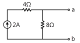
- RT=8/3, VT=8
- RT=8, VT=12
- RT=8, VT=16
- RT=8/3, VT=16
(정답률: 50%)
78. 60[hz], 120[V] 정격인 단상 유도 전동기의 출력은 3[HP]이고, 효율은 90[%]이며, 역률은 80[%]이다. 역률을 100[%]로 개선하기 위한 병렬 콘덴서의 용량은 약 몇 [VA]인가? (단, 1[HP]은 746[W]이다.)
- 1865[VA]
- 2252[VA]
- 2667[VA]
- 3156[VA]
(정답률: 45%)
79. e=100√2 sinωt＋75√2 sin3ωt＋20√2 sin5ωt[V]인 전압을 RL 직렬회로에 가할 때 제 3고조파 전류의 실효치는? (단, R=4[Ω], ωL=1[Ω]이다.)
- 15[A]
- 15√2[A]
- 20[A]
- 20√2[A]
(정답률: 63%)
80. 4단자 정수 A, B, C, D 중에서 어드미턴스 차원을 가진 정수는?
- A
- B
- C
- D
(정답률: 71%)
5과목: 전기설비기술기준 및 판단기준
81. 쇼윈도내의 배선에 사용전압 400[V] 미만에 사용하는 캡타이어 케이블의 단면적은 최소 몇 [mm2]인가?
- 1.25
- 1.0
- 0.75
- 0.5
(정답률: 61%)
82. 터널 내에 3300[V] 전선로를 케이블 공사로 시행하려고 한다. 케이블을 조영재의 옆면 또는 아래 면에 따라 붙일 경우에 케이블의 지지점간의 거리는 몇 [m] 이하로 하여야 하는가?
- 1
- 1.5
- 2
- 2.5
(정답률: 43%)
83. 특고압 전로와 고압 전로를 결합하는 변압기에 설치하는 방전 장치의 접지 저항은 몇 [Ω] 이하로 유지하여야 하는가?
- 2
- 3
- 5
- 10
(정답률: 44%)
84. 사용 전압이 20[kV]인 변전소에 울타리, 담 등을 시설하고자 할 때 울타리, 담 등의 높이는 몇 [m] 이상 이어야 하는가?
- 1
- 2
- 5
- 6
(정답률: 50%)
85. 발전기, 전동기, 조상기, 기타 회전기(회전 변류기 제외)의 절연 내력 시험 시 전압은 어느 곳에 가하면 되는가?
- 권선과 대지사이
- 외함 부분과 전선 사이
- 외함 부분과 대지 사이
- 회전자와 고정자 사이
(정답률: 58%)
86. 154[kV] 가공 전선로를 제1종 특고압 보안공사에 의하여 시설하는 경우 사용 전선은 인장강도 58.84[kN] 이상의 연선 또는 단면적 몇 [mm2]의 경동연선이어야 하는가?
- 38
- 55
- 100
- 150
(정답률: 51%)
87. 전식 방지를 위한 귀선의 시설 방법에 해당되지 않는 것은?
- 귀선은 부극성으로 할 것
- 이음매 하나의 저항은 그 레일의 길이 5[m]의 저항에 상당하는 값 이하인 것
- 특수한 곳을 제외하고 귀선용 레일은 길이 30[m] 이상 일 것
- 용접용 본드는 단면적 22[mm2] 이상, 길이 60[㎝] 이상의 연선일 것
(정답률: 37%)
88. 특고압 계기용변성기의 2차측 전로의 접지 공사는?(오류 신고가 접수된 문제입니다. 반드시 정답과 해설을 확인하시기 바랍니다.)
- 제 1종 접지공사
- 제 2종 접지 공사
- 제 3종 접지 공사
- 특별 제 3종 접지 공사
(정답률: 42%)
89. 빙설이 많은 지방의 특고압 가공 전선 주위에 부착되는 빙설의 두께[㎜]와 비중은?
- 6, 0.9
- 6, 1.0
- 8, 0.9
- 8, 1.0
(정답률: 51%)
90. 금속 덕트 공사에 의한 저압 옥내배선 공사 중 적합하지 않은 것은?
- 금속 덕트에 넣은 전선의 단면적 합계가 덕트의 내부 단면적의 20[%] 이하가 되게 하여야 한다.
- 덕트 상호간은 견고하고, 전기적으로 완전하게 접속 하여야 한다.
- 덕트를 조영재에 붙이는 경우에는 덕트의 지지점간의 거리를 8[m] 이하로 하여야 한다.
- 저압 옥내배선의 사용 전압이 400[V] 미만인 경우 덕트에 제3종 접지공사를 하여야 한다.
(정답률: 63%)
91. 합성 수지관 공사에 의한 저압 옥내배선에 대한 설명으로 옳은 것은?
- 합성수지관 안에 전선의 접속점이 있어도 된다.
- 전선은 반드시 옥외용 비닐절연전선을 사용한다.
- 기계적 충격을 받을 우려가 없도록 시설하여야 한다.
- 관의 지지점간의 거리는 3[m] 이하로 한다.
(정답률: 62%)
92. 가공 전선로의 지지물에 시설하는 지선의 시설 기준에 대한 설명 중 옳은 것은?
- 지선의 안전율은 2.5 이상일 것
- 전선 4조 이상의 연선일 것
- 지중 부분 및 지표상 100[㎝]까지의 부분은 철봉을 사용할 것
- 도로를 횡단하여 시설하는 지선의 높이는 지표상 4.5[m] 이상으로 할 것
(정답률: 66%)
93. 가공 전선로의 지지물에 시설하는 통신선과 고압 가공 전선 사이의 이격거리는 몇 [㎝] 이상이어야 하는가?
- 120
- 100
- 75
- 60
(정답률: 44%)
94. 변압기에 의하여 특고압 전로에 결합되는 고압전로에는 사용전압의 3배 이하의 전압이 가하여진 경우에 방전하는 피뢰기를 어느 곳에 시설 할 때, 방전장치를 생략할 수 있는가?
- 변압기의 단자
- 변압기 단자의 1극
- 고압전로의 모선의 각상
- 특고압 전로의 1극
(정답률: 48%)
95. 시가지에 시설하는 통신선을 특고압 가공전선로의 지지물에 시설하고자 하는 경우 통신선은?
- 2.6㎜ 이상의 절연전선
- 4㎜ 이상의 절연전선
- 5㎜ 이상의 절연전선
- 5.5㎜ 이상의 절연전선
(정답률: 34%)
96. 특고압 가공전선로의 지지물로 사용하는 목주의 풍압하중에 대한 안전율은 얼마 이상이어야 하는가?
- 1.2
- 1.5
- 2.0
- 2.5
(정답률: 49%)
97. 일정 용량 이상의 조상기에는 그 내부에 고장이 생긴 경우에 자동적으로 이를 전로로부터 차단하는 장치를 하여야 하는데 그 용량은 몇 [kVA] 이상인가?
- 15000
- 20000
- 35000
- 40000
(정답률: 68%)
98. 가공 전선로에 사용되는 특고압 전선용의 애자장치에 대한 갑종 풍압 하중은 그 구성재의 수직투영면적 1[m2]에 대한 풍압으로 몇 Pa를 기초로 계산하여야 하는가?
- 588
- 745
- 660
- 1039
(정답률: 53%)
99. 사용 전압이 154[kV]인 가공 송전선의 시설에서 전선과 식물과의 이격거리는 일반적인 경우에 몇 [m] 이상으로 하여야 하는가?
- 2.8
- 3.2
- 3.6
- 4.2
(정답률: 49%)
100. 백열전등 또는 방전등 및 이에 부속하는 전선은 사람이 접촉할 우려가 없는 경우 대지 전압은 최대 몇 [V]인가?
- 100
- 150
- 300
- 450
(정답률: 68%)
자석 재료로 폐회로를 만들면 강한 영구자석이 된다는 설명은 잘못된 정보이며, 영구자석을 만들기 위해서는 특수한 자석 재료와 공정이 필요합니다.
한번 자화된 다음에는 자기를 영구적으로 보존하는 자석이 된다는 것은 자석의 기본 원리 중 하나입니다. 보자력이 클수록 자계가 강한 영구자석이 된다는 것과 잔류 자속밀도가 클수록 자계가 강한 영구자석이 된다는 것도 옳은 설명입니다.